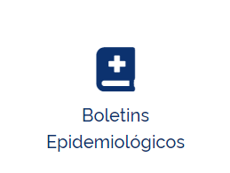
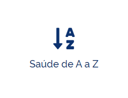

  Noticias recentes: Ministério da Saúde recebe crédito extraordinário de R$ 5,3 bilhões para reforço do SUS e combate à pandemia Leia mais... Saúde envia mais 168.950 mil doses de vacinas covid-19 para o Espírito SantoLeia mais... Saúde envia mais 18.250 doses de vacinas covid-19 para o AmapáLeia mais... Saúde envia mais 266.800 doses de vacinas covid-19 para GoiásLeia mais...